Tutorial 2: Compaction via a rigid body¶
Introduction¶
This quick start tutorial introduces the concept of a rigid body interacting with the material points.
This tutorial analyses a cube compressed by a rigid cube through 25% of its height and is used to validate that the contact formulation produces the expected uniform vertical stress field. This problem has been used to validate our contact formulation 1 and our adaptive-octree extension 2.
This tutorial has three main sections after the introduction:
Background: rigid-body contact¶
This tutorial extends Tutorial 1 to include normal contact. A brief overview is provided here for context; see the normal-contact weak form for the full technical details. Figure 1 provides a schematic overview of how the contact between the rigid body and the material points works.
When contact is detected between a GIMP and the rigid body, (a) initial state, a normal contact force is applied at the corners of the GIMP to resist the overlap. This force is proportional to the amount of overlap and can be thought of as a spring whose stiffness resists the overlap. The spring stiffness is a function of the GIMP size and material properties, calculated as
where \(E_p\) is the Young's modulus of the GIMP in contact, \(A_p^0 = (V_p^0)^{2/3}\) is a representation of the contact area with \(V_p^0\) the initial GIMP volume, and \(p_f\) is the penalty factor. The penalty factor controls how stiffly the contact constraint is enforced; for this stiff problem \(p_f = 1000\) gives a stress error of around \(3\%\) (see Analysing the stress in the domain) and is used throughout this tutorial. For less constrained problems \(p_f = 50\) is typically sufficient.
After the spring has been activated the GIMPs and the mesh deform due to the contact forces created by the springs, (b) deformed state, and once convergence is obtained the mesh is reset, (c) mesh reset.
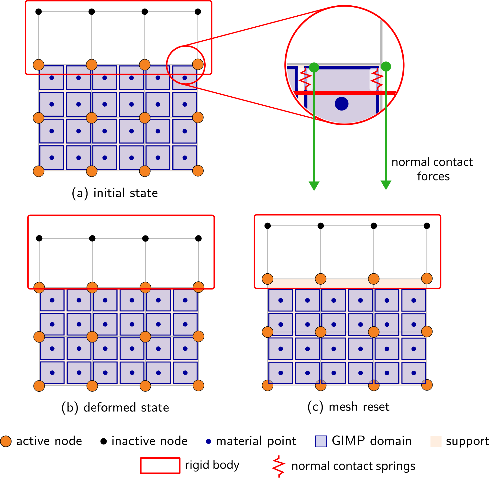
Input setup¶
Problem summary¶
The aim is to introduce the set-up and modelling of soil-structure interaction problems. The problem is a deformable cube compressed by a rigid cube; although simple, it is essential as it validates the contact formulation by confirming that the contact overlap stays small and the resulting vertical stress field is uniform throughout the cube and matches the analytical Hencky solution for the Cauchy stress in the vertical direction
where \(L_0 = 0.8\) m is the initial cube height, \(\Delta z = -0.2\) m is the prescribed compression and \(L = L_0 + \Delta z = 0.6\) m is the final height after the \(25\%\) axial compression.
As in Tutorial 1 the material is homogeneous Hencky elastic (\(E = 10^6\) Pa, \(\nu = 0\)) and is discretised by a uniform \(0.4\) m mesh (\(2 \times 2 \times 2 = 8\) elements) with a \(2 \times 2 \times 2\) grid of GIMPs per element. Roller boundaries are imposed on the four side faces and the base, the top face is left as a free surface, and every node has its \(x\) and \(y\) degrees of freedom fixed to keep the problem one-dimensional in compression.
For this problem the position of the rigid body cube is set up correctly so the user only has to import the file. A future tutorial will cover the details of designing the rigid body, making it accessible to the code and positioning it correctly.
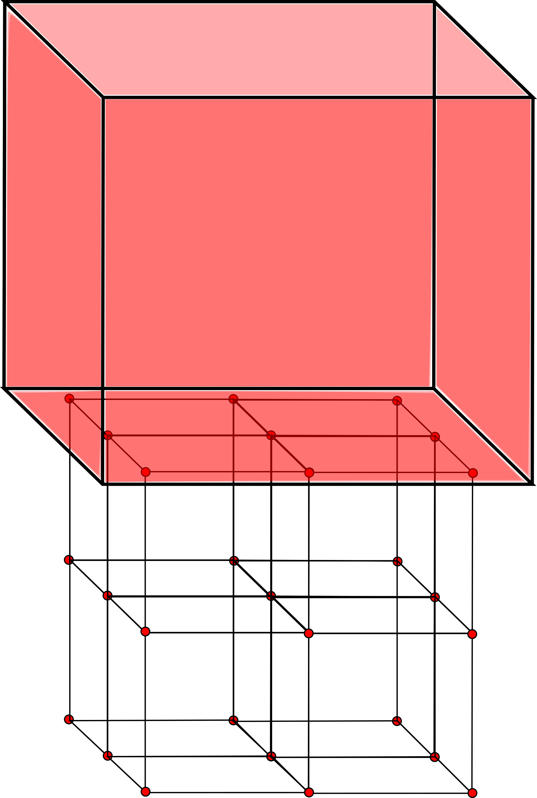
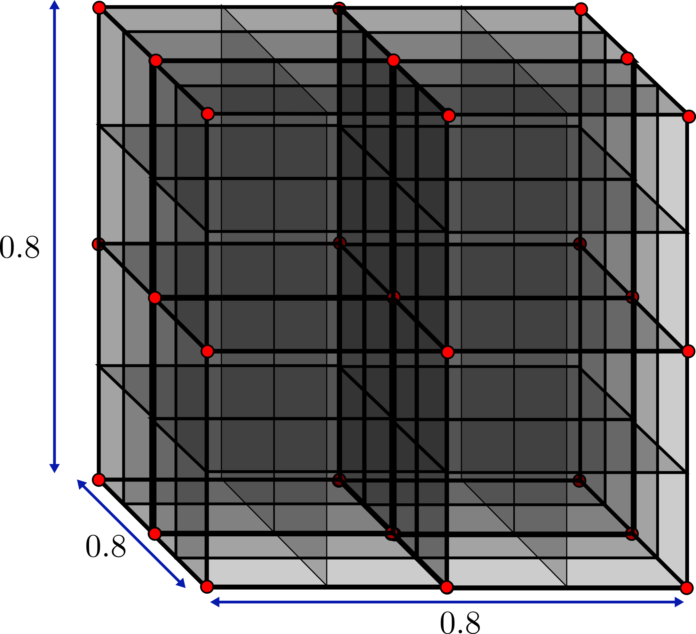
The simulation is configured through a single JSON object - a human-readable, editable text file. It is extended from Tutorial 1 to also contain the rigid body information and boundary conditions. The complete file for this problem can be found here and for all input settings see the input_data.json file format.
input_data.jsonInitial GIMP distribution¶
The Initial GIMP distribution is set to fill the whole cube and so is given the same parameters as the Mesh data. The default initial GIMP distribution is a grid of 8 GIMPs, \(2 \times 2 \times 2\) within each element.
Boundary conditions¶
Rollers are applied on the four side faces and the base (\(\pm x\), \(\pm y\), \(-z\)). The top (\(+z\)) face is left as a free surface (default) and does not appear in the file - the load comes from the rigid cube rather than a traction. Every node has its \(x\) and \(y\) degrees of freedom fixed to keep the problem one-dimensional in compression.
Material¶
The cube is homogeneous, so a single layer is specified with the Hencky elastic model and the parameters from the Problem summary (\(E = 10^6\) Pa, \(\nu = 0\)).
Rigid body¶
The rigid body geometry is loaded from cube.stl and it is automatically placed with its lower face at the top of the deformable cube. It is then given a prescribed downward displacement of \(\Delta z = -0.2\) m, applied uniformly over the 20 load increments. The normal penalty factor pf is set to \(1000\), the value identified in the Results as giving a stress error of around \(3\%\) for this stiff problem.
Solver¶
The rigid-body displacement is ramped quasi-statically over 20 increments using a Newton-Raphson scheme.
Deploying and running the problem¶
AMPSSIE is written in the Julia programming language, and there are two ways to run the code, both explored on the deployment page. As this is a small problem that runs quickly, this tutorial will use Julia directly; see the installation guide for instructions on installing Julia and the AMPSSIE library.
terminalSetting up and running the problem¶
Once Julia is installed, download the AMPSSIE package from GitHub - the deployment page covers how to do this. The commands below work the same on Windows, macOS and Linux.
The first step is to copy the input_data.json into the top-level AMPSSIE directory, provided here. If you do this on the command line it will look like this
input_data.json and the second is the top-level AMPSSIE directory.
The next steps are to start Julia and load the AMPSSIE package. Open a terminal (command line or PowerShell on Windows) and start Julia with the command:
Then change into the top-level AMPSSIE directory
and run
to install the AMPSSIE package and start multiple parallel workers.If it works correctly the output should resemble the corresponding terminal window. If there are issues, see the deployment page for troubleshooting.
➜ julia
_ _ _(_)_ | Documentation: https://docs.julialang.org
(_) | (_) (_) |
_ _ _| |_ __ _ | Type "?" for help, "]?" for Pkg help.
| | | | | | |/ _` | |
| | |_| | | | (_| | | Version 1.12.4 (2026-01-06)
_/ |\__'_|_|_|\__'_| | Official https://julialang.org release
|__/ |
julia> include("setup_workers.jl")
Resolving package versions...
Project No packages added to or removed from `~/.julia/environments/v1.12/Project.toml`
Manifest No packages added to or removed from `~/.julia/environments/v1.12/Manifest.toml`
Activating project at `~/Documents/Codes/AMPSSIE/MaterialPoints`
Activating From worker 2: Activating project at `~/Documents/Codes/AMPSSIE/MaterialPoints`project at `~/Documents/Codes/AMPSSIE/MaterialPoints`
From worker 3: Activating project at `~/Documents/Codes/AMPSSIE/MaterialPoints`
starting sim
total memory 30.655887603759766GB
free memory 15.59844970703125GB
total memory 30.655887603759766GB
From worker 2: total memory 30.655887603759766GB
From worker 3: total memory 30.655887603759766GB
free memory 15.593147277832031GB
From worker 2: free memory 15.593147277832031GB
Running the problem¶
With the input_data.json in the correct place and Julia running with the AMPSSIE package loaded, the simulation can be started by calling the AMPSSIE entry point.
input_data.json from the current directory, steps through the 20 load increments under the prescribed rigid-body displacement, and writes .vtu and .vtk output files for ParaView visualisation along with a .csv file specific to this validation problem.
Reading the output¶
Before the load steps begin, AMPSSIE prints a short rigid-body preamble:
Making rbdata- the rigid body is being constructed from thegeometrySTL referenced in the Rigid body JSON block (cube.stlhere).Output data for the construction of the cube- a per-body diagnostic block tagged with the rigid body's name.Info : 8 nodes 18 elements- the tessellation of the STL surface mesh that AMPSSIE will use for contact detection (8 nodes and 18 triangular elements for a unit cube).
Each time … block in the terminal then corresponds to one of the 20 load increments. AMPSSIE uses a pseudo-time that runs from \(t = 0\) to \(t = 1\), with the increment size dt calculated automatically as \(1 / \text{number of increments}\) (so dt \(= 0.05\) for this run). For each step the solver prints:
time X.XXXXXe+XX ----- the pseudo-time at the start of the step.number of isolated material points- a connectivity check; should stay at0for this problem.Pre NR contact search start ... complete- the broad-phase contact search that runs once at the start of the step to identify which GIMPs lie within range of the rigid body before the Newton-Raphson iterations begin.minimum ghost value- the ghost-stabilisation parameter in use.Contact sparse start ... complete- assembly of the sparse contact stiffness contributions for the active GIMP-rigid-body pairs found by the search.Iteration N | Error: … | dt: …- the Newton-Raphson iteration number, the residual norm and the step size. The error should drop sharply (quadratic convergence) until it falls below the solver tolerance.solve time X.XXX s- wall-clock time spent on that iteration.vtk storage start … complete- the per-step results being written to disk.
When all 20 increments are finished the simulation prints Simulation complete!.
julia> AMPSSIE.run("input_data.json");
Making rbdata
...
Output data for the construction of the cube
...
Info : 8 nodes 18 elements
time 0.00000e+00 ----------------------------------
number of isolated material points: 0
Pre NR contact search start ... complete
minimum ghost value 1.0e6
Contact sparse start ... complete
Iteration 0 | Error: 0.000000e+00 | dt: 5.000e-02
vtk storage start ... complete
time 5.00000e-02 ----------------------------------
number of isolated material points: 0
Pre NR contact search start ... complete
minimum ghost value 1.0e6
Contact sparse start ... complete
Iteration 0 | Error: 2.526316e+03 | dt: 5.000e-02
solve time 0.0 s | Iteration 1 | Error: 6.177756e-01 | dt: 5.000e-02
solve time 0.0 s | Iteration 2 | Error: 3.808896e-08 | dt: 5.000e-02
vtk storage start ... complete
time 1.00000e-01 ----------------------------------
number of isolated material points: 0
Pre NR contact search start ... complete
minimum ghost value 1.0e6
Contact sparse start ... complete
Iteration 0 | Error: 2.461546e+03 | dt: 5.000e-02
solve time 0.0 s | Iteration 1 | Error: 6.309702e-01 | dt: 5.000e-02
solve time 0.0 s | Iteration 2 | Error: 4.278177e-08 | dt: 5.000e-02
vtk storage start ... complete
time 1.50000e-01 ----------------------------------
number of isolated material points: 0
Pre NR contact search start ... complete
minimum ghost value 1.0e6
Contact sparse start ... complete
Iteration 0 | Error: 2.398652e+03 | dt: 5.000e-02
solve time 0.0 s | Iteration 1 | Error: 6.448210e-01 | dt: 5.000e-02
solve time 0.0 s | Iteration 2 | Error: 4.810514e-08 | dt: 5.000e-02
vtk storage start ... complete
time 2.00000e-01 ----------------------------------
number of isolated material points: 0
Pre NR contact search start ... complete
minimum ghost value 1.0e6
Contact sparse start ... complete
Iteration 0 | Error: 2.337782e+03 | dt: 5.000e-02
solve time 0.0 s | Iteration 1 | Error: 6.594239e-01 | dt: 5.000e-02
solve time 0.0 s | Iteration 2 | Error: 5.416280e-08 | dt: 5.000e-02
vtk storage start ... complete
time 2.50000e-01 ----------------------------------
number of isolated material points: 0
Pre NR contact search start ... complete
minimum ghost value 1.0e6
Contact sparse start ... complete
Iteration 0 | Error: 2.279093e+03 | dt: 5.000e-02
solve time 0.0 s | Iteration 1 | Error: 6.748915e-01 | dt: 5.000e-02
solve time 0.0 s | Iteration 2 | Error: 6.110472e-08 | dt: 5.000e-02
vtk storage start ... complete
time 3.00000e-01 ----------------------------------
number of isolated material points: 0
Pre NR contact search start ... complete
minimum ghost value 1.0e6
Contact sparse start ... complete
Iteration 0 | Error: 2.222753e+03 | dt: 5.000e-02
solve time 0.0 s | Iteration 1 | Error: 6.913559e-01 | dt: 5.000e-02
solve time 0.0 s | Iteration 2 | Error: 6.907826e-08 | dt: 5.000e-02
vtk storage start ... complete
time 3.50000e-01 ----------------------------------
number of isolated material points: 0
Pre NR contact search start ... complete
minimum ghost value 1.0e6
Contact sparse start ... complete
Iteration 0 | Error: 2.168939e+03 | dt: 5.000e-02
solve time 0.0 s | Iteration 1 | Error: 7.089713e-01 | dt: 5.000e-02
solve time 0.0 s | Iteration 2 | Error: 7.829545e-08 | dt: 5.000e-02
vtk storage start ... complete
time 4.00000e-01 ----------------------------------
number of isolated material points: 0
Pre NR contact search start ... complete
minimum ghost value 1.0e6
Contact sparse start ... complete
Iteration 0 | Error: 2.117839e+03 | dt: 5.000e-02
solve time 0.0 s | Iteration 1 | Error: 7.279175e-01 | dt: 5.000e-02
solve time 0.0 s | Iteration 2 | Error: 8.890471e-08 | dt: 5.000e-02
vtk storage start ... complete
time 4.50000e-01 ----------------------------------
number of isolated material points: 0
Pre NR contact search start ... complete
minimum ghost value 1.0e6
Contact sparse start ... complete
Iteration 0 | Error: 2.069646e+03 | dt: 5.000e-02
solve time 0.0 s | Iteration 1 | Error: 7.484033e-01 | dt: 5.000e-02
solve time 0.0 s | Iteration 2 | Error: 1.012049e-07 | dt: 5.000e-02
vtk storage start ... complete
time 5.00000e-01 ----------------------------------
number of isolated material points: 0
Pre NR contact search start ... complete
minimum ghost value 1.0e6
Contact sparse start ... complete
Iteration 0 | Error: 2.024562e+03 | dt: 5.000e-02
solve time 0.0 s | Iteration 1 | Error: 7.706702e-01 | dt: 5.000e-02
solve time 0.0 s | Iteration 2 | Error: 1.155149e-07 | dt: 5.000e-02
vtk storage start ... complete
time 5.50000e-01 ----------------------------------
number of isolated material points: 0
Pre NR contact search start ... complete
minimum ghost value 1.0e6
Contact sparse start ... complete
Iteration 0 | Error: 1.982790e+03 | dt: 5.000e-02
solve time 0.0 s | Iteration 1 | Error: 7.949963e-01 | dt: 5.000e-02
solve time 0.0 s | Iteration 2 | Error: 1.322700e-07 | dt: 5.000e-02
vtk storage start ... complete
time 6.00000e-01 ----------------------------------
number of isolated material points: 0
Pre NR contact search start ... complete
minimum ghost value 1.0e6
Contact sparse start ... complete
Iteration 0 | Error: 1.944536e+03 | dt: 5.000e-02
solve time 0.0 s | Iteration 1 | Error: 8.217005e-01 | dt: 5.000e-02
solve time 0.0 s | Iteration 2 | Error: 1.518932e-07 | dt: 5.000e-02
vtk storage start ... complete
time 6.50000e-01 ----------------------------------
number of isolated material points: 0
Pre NR contact search start ... complete
minimum ghost value 1.0e6
Contact sparse start ... complete
Iteration 0 | Error: 1.910002e+03 | dt: 5.000e-02
solve time 0.0 s | Iteration 1 | Error: 8.511466e-01 | dt: 5.000e-02
solve time 0.0 s | Iteration 2 | Error: 1.750679e-07 | dt: 5.000e-02
vtk storage start ... complete
time 7.00000e-01 ----------------------------------
number of isolated material points: 0
Pre NR contact search start ... complete
minimum ghost value 1.0e6
Contact sparse start ... complete
Iteration 0 | Error: 1.879384e+03 | dt: 5.000e-02
solve time 0.0 s | Iteration 1 | Error: 8.837477e-01 | dt: 5.000e-02
solve time 0.0 s | Iteration 2 | Error: 2.024459e-07 | dt: 5.000e-02
vtk storage start ... complete
time 7.50000e-01 ----------------------------------
number of isolated material points: 0
Pre NR contact search start ... complete
minimum ghost value 1.0e6
Contact sparse start ... complete
Iteration 0 | Error: 1.852863e+03 | dt: 5.000e-02
solve time 0.0 s | Iteration 1 | Error: 9.199702e-01 | dt: 5.000e-02
solve time 0.0 s | Iteration 2 | Error: 2.350655e-07 | dt: 5.000e-02
vtk storage start ... complete
time 8.00000e-01 ----------------------------------
number of isolated material points: 0
Pre NR contact search start ... complete
minimum ghost value 1.0e6
Contact sparse start ... complete
Iteration 0 | Error: 1.830607e+03 | dt: 5.000e-02
solve time 0.0 s | Iteration 1 | Error: 9.603378e-01 | dt: 5.000e-02
solve time 0.0 s | Iteration 2 | Error: 2.740436e-07 | dt: 5.000e-02
vtk storage start ... complete
time 8.50000e-01 ----------------------------------
number of isolated material points: 0
Pre NR contact search start ... complete
minimum ghost value 1.0e6
Contact sparse start ... complete
Iteration 0 | Error: 1.812760e+03 | dt: 5.000e-02
solve time 0.0 s | Iteration 1 | Error: 1.005436e+00 | dt: 5.000e-02
solve time 0.0 s | Iteration 2 | Error: 3.208429e-07 | dt: 5.000e-02
vtk storage start ... complete
time 9.00000e-01 ----------------------------------
number of isolated material points: 0
Pre NR contact search start ... complete
minimum ghost value 1.0e6
Contact sparse start ... complete
Iteration 0 | Error: 1.799439e+03 | dt: 5.000e-02
solve time 0.0 s | Iteration 1 | Error: 1.055915e+00 | dt: 5.000e-02
solve time 0.0 s | Iteration 2 | Error: 3.773116e-07 | dt: 5.000e-02
vtk storage start ... complete
time 9.50000e-01 ----------------------------------
number of isolated material points: 0
Pre NR contact search start ... complete
minimum ghost value 1.0e6
Contact sparse start ... complete
Iteration 0 | Error: 1.790731e+03 | dt: 5.000e-02
solve time 0.0 s | Iteration 1 | Error: 1.112496e+00 | dt: 5.000e-02
solve time 0.0 s | Iteration 2 | Error: 4.457677e-07 | dt: 5.000e-02
vtk storage start ... complete
Simulation complete!
Viewing the results¶
The simulation results appear as the simulation runs, so you do not need to wait until it has finished. When the problem is run using your local Julia installation, the .csv, .vtk and .vtu files are stored in MaterialPoints/src/output (as configured in the output data section of the input file).
Visualising the output in ParaView¶
The walkthrough below follows the same pattern as the ParaView walkthrough from Tutorial 1, but loads the additional rigid-body output (rbData..vtk) alongside the GIMP and background-mesh data, and finishes by hiding the rigid body so the deformed cube can be inspected on its own. The same 3D-navigation controls (left-drag to rotate, scroll to zoom) apply throughout.
1. Open ParaView. Launch ParaView from your applications menu or terminal. You should see an empty render view with the orientation axis in the bottom-left corner.
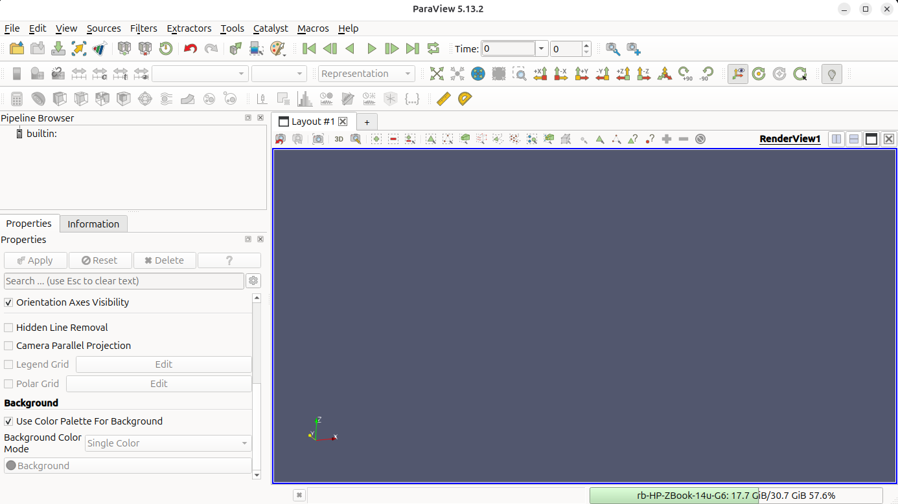
2. Open the output files. Use File → Open and navigate to MaterialPoints/src/output. Hold Ctrl and click Octree..vtu, mpDataV..vtu and rbData..vtk so all three datasets are highlighted, then click OK. The three files give you the background mesh, the GIMPs and the rigid body respectively.
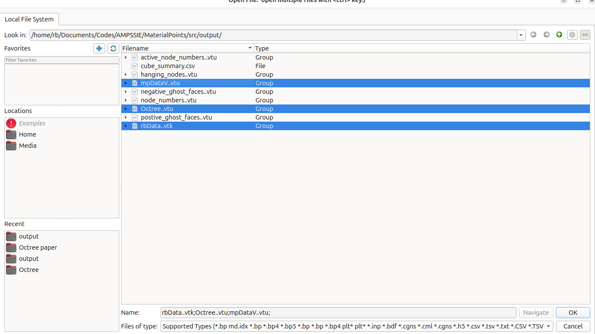
3. Apply the readers. Click Apply in the Properties panel for each reader. The deformable cube appears as a solid grey block with the rigid cube sitting directly on top of it. In the current view it is difficult to see which body is which; try rotating by click-and-drag inside the Layout #1 render view to inspect the geometry.
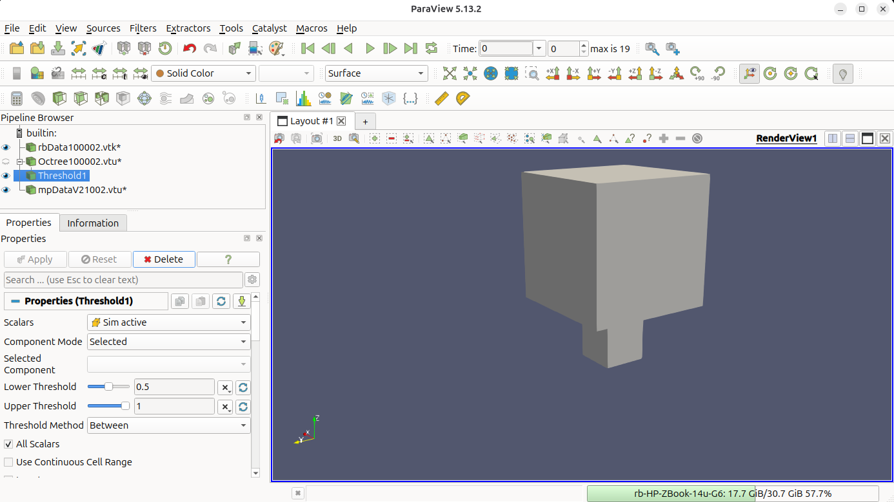
4. View only the active elements. We want to keep only the mesh cells that contain GIMPs and hide the inactive elements. This is achieved with the Threshold filter: with Octree..vtu selected, go to Filters → Common → Threshold, set the scalar to Sim active, lower threshold 0.5, upper 2, then click Apply.
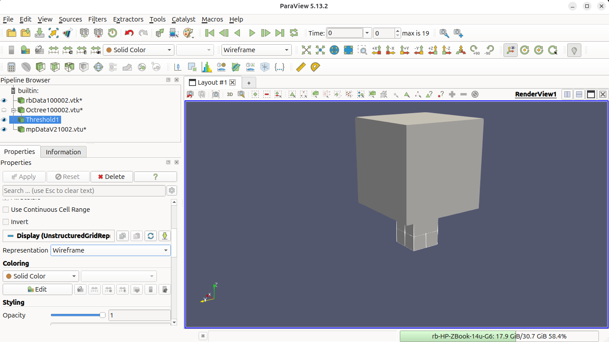
5. Make the mesh a Wireframe. Change the representation of the Threshold1 filter to Wireframe so the active mesh edges are drawn as lines instead of filled surfaces. This lets the GIMPs underneath become visible.
Additionally, try pressing the Reset button, marked by the red circle, to obtain a better view.
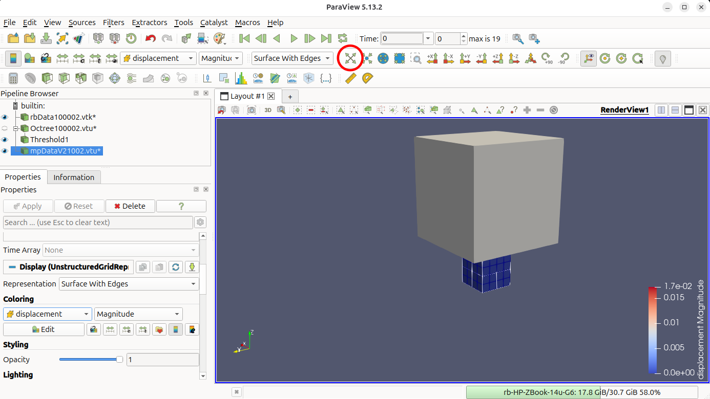
6. Colour the GIMPs by displacement. Select mpDataV..vtu and change Coloring to displacement → Magnitude.
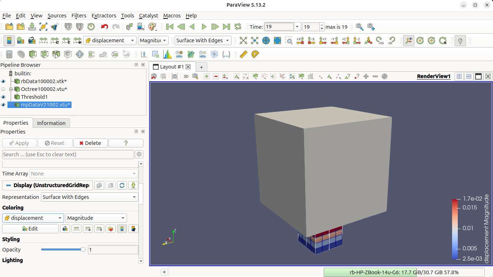
7. Advance to the final step and hide the rigid body. Click the Go to Last button (▶|) in the time toolbar to jump to load increment 19, then click Rescale to Data Range in the colour-bar toolbar so the scale matches the deformed configuration. The rigid cube has now driven \(0.2\) m into the top of the deformable cube. Next click the eye icon next to rbData..vtk in the Pipeline Browser to toggle the rigid body off. The deformable cube is now visible on its own, with the displacement banding running from the (compressed) top face down to the (fixed) base.
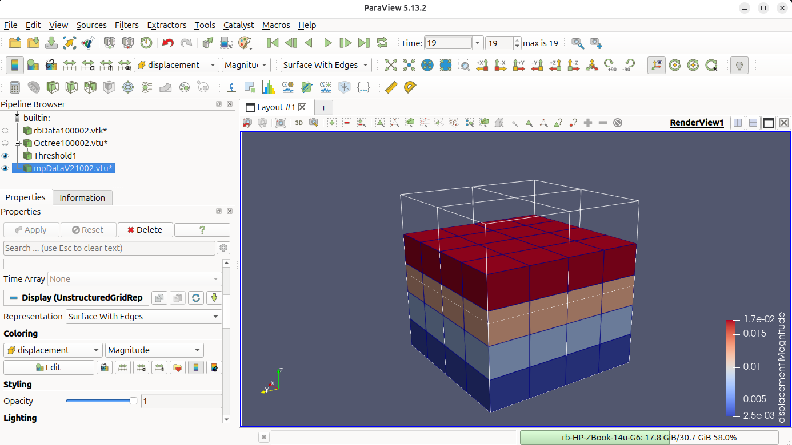
8. Inspect the final stress distribution. In the Pipeline Browser click on mpDataV21102.vtu, go into properties and under coloring select stress and magnitude to show the stress distribution for the final plot. To scale the colours click Rescale to Data Ranage. Last rotate the view to confirm the bands are flat and the colour is uniform across each \(0.4\) m mesh layer - this is the visual signature of the uniform vertical stress field predicted by the analytical Hencky solution in the Problem summary.
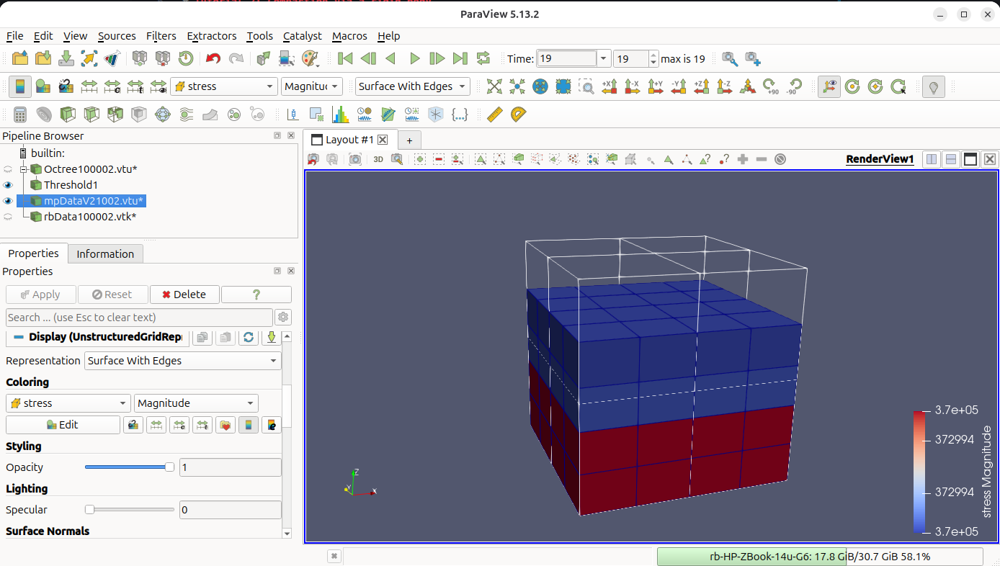
Analysing the stress in the domain¶
The option "text data": "contact cube" in Output data writes a one-row summary cube_summary.csv to MaterialPoints/src/output. Its columns are the penalty factor, the final cube height, the GIMP-averaged vertical Cauchy stress and the final \(z\)-position of the rigid body's lower face:
pen_factor, final_height, avg_stress_zz, min_rb_pos
1000, 0.6037299414518334, -372994.2487099074, 0.5999999989999916
Each time you run this problem with different parameters a new row will be appended to the bottom of the file.
For these results the simulated stress \(\bar{\sigma}_{zz}^{\text{sim}} \approx -3.73 \times 10^{5}\) Pa matches the analytical Hencky-Cauchy value \(-3.84 \times 10^{5}\) Pa from the Problem summary to within \(\approx 2.8\%\). The contact overlap final_height - min_rb_pos \(\approx 3.7 \times 10^{-3}\) m (\(\approx 0.6\%\) of the cube height) shows that the penalty spring is doing a good job at minimising the overlap between the two bodies.
Raise normal penalty factor in the Rigid body JSON block to reduce both of these errors further and observe the additional rows added to the end of the text file.
-
Robert E. Bird, Giuliano Pretti, William M. Coombs, Charles E. Augarde, Yaseen U. Sharif, Michael J. Brown, Gareth Carter, Catriona Macdonald, and Kirstin Johnson. A dynamic implicit 3D material point-to-rigid body contact approach for large deformation analysis. International Journal for Numerical Methods in Engineering, 2025. ↩
-
Robert E. Bird, William M. Coombs, Charles E. Augarde, Giuliano Pretti, and Ted J. O'Hare. An implicit octree-based adaptive material point method. 2026. URL: https://arxiv.org/abs/2606.09275, arXiv:2606.09275. ↩